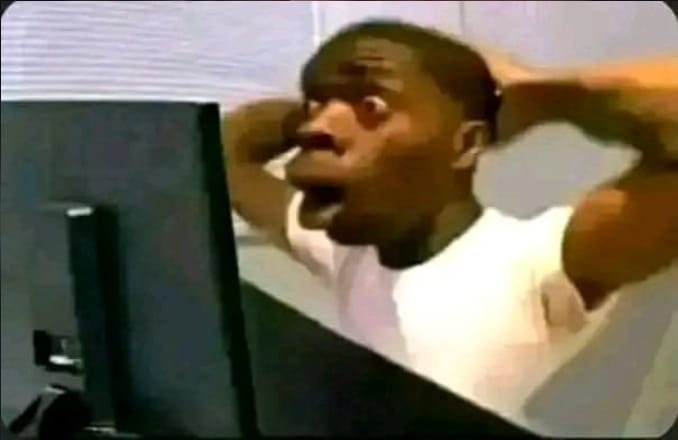

DQN From Scratch
Links
Project Description
I wanted to actually understand reinforcement learning, and the computations that happen inside neural networks, we've already been taught the theory so I was familiar enough with the underlying math and architecture, but it wasn't enough. You have to get your hands dirty to truly understand how something works.
It wouldn't be a truly from scratch project if it wasn't coded in C, and so that was my langauge of choice (shocker), it also helps that I already had a custom made C stack/framework I use for my games (an older version of it anyhow), so I'd get a game loop, rendering, hot reloading, a debug HUD, etc...
Another restriction I put was AI help, I've decided to not use AI for any code or any help whatsoever, this was at a point where AI was starting to make me more and more lazy and stupid. So this was my chance to prove that I still got it.
And thus the project was born, I'd create a pong game where the model learns to play against a simple opponent.
The Network
Everything is hand written:
- Inputs (6): ball x/y, ball velocity x/y, my paddle y, opponent paddle y
- Hidden layers: two layers of 64 neurons, ReLU (opted for 64 but it's adjustable)
- Outputs (3): move up, move down, do nothing
The forward pass, the backprop, and all the gradient math were hand-written first on paper then in C with a fuck ton of back and forth. Weight init is Xavier/He, and gradients get clipped so a bad batch doesn't blow up training.
The DQN Parts
I decided to go with DQN rather than a traditional RL approach, because it was the newer thing and another chance to learn.
- Experience replay: a 150k entry buffer of state, action, reward, next state, sampled in random batches of 64.
- Epsilon-greedy exploration: starts fully random and decays over time, so early on it's basically flailing around, and later it mostly trusts the network.
- Target network: a frozen copy used to compute targets, synced every 1000 iterations. Without it, the network just chases its own tail.
- Huber loss: squared error when the prediction is close, linear when it's way off, so a few terrible guesses don't hijack the whole update.
- Reward: +0.5 for returning the ball, +1 for scoring, -1 for getting scored on. A point ends the episode.
Training Curriculum
A cold start in Pong is brutal, the ball just flies past you every game and there's almost nothing to learn from. So training slowly ramps up instead:
- The opponent doesn't move at all for the first 5k iterations. It just stands there.
- From 5k to 20k it starts playing, but badly on purpose: slow, delayed reactions, and it makes mistakes that taper off as training goes.
- Separately, the ball spawns aimed at the model early on, with that bias decaying over the first 25k iterations. So the model gets a bunch of balls it can actually reach while it's still clueless.
By the time the curriculum is over, both paddles are playing for real.
Running It
- Toggle between train and play mode whenever. In play mode you take over the left paddle, epsilon drops to 0, and the model plays for real, no random moves.
- Save and load the model to
pong_model.binwhile it's running. - The HUD shows mean error, iteration, current epsilon, replay buffer fill, and a countdown to the next target network sync.
Where It's At
It worked when I first finished it around a year ago, the model learns consistently to return and track the ball, and it converges well. But my current testing as I write this didn't give good results, I did experiment and tweak a bunch of things last year that seem to have made it not perform so well anymore, and I don't want to bother fixing it right now.
Either way what should be taken from this experiemnt is the implementation of the DQN algorithm and the neural network math, so if you take anything out of this project it's that. Also, you can see the results I got down bellow in the Showcase section.
Showcase
Spoiler
How it felt getting that result initial result:
